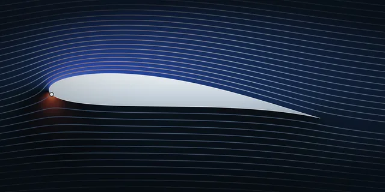
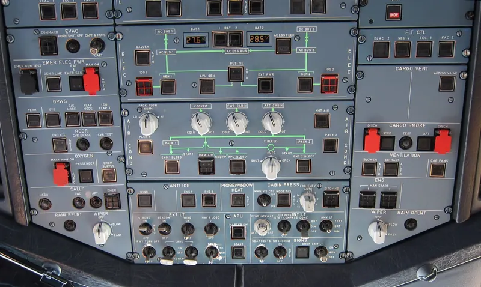
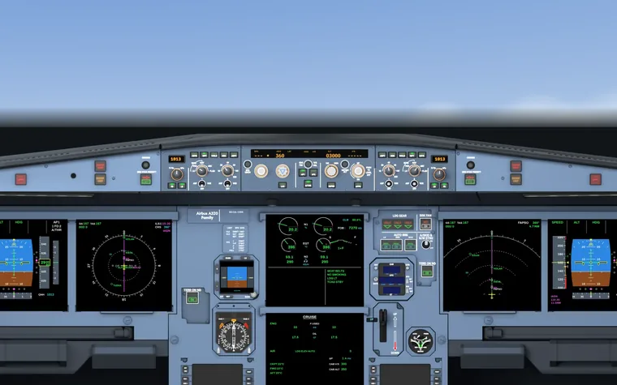

The Nordic Aviation Platform
Explore flight theory, practise cockpit procedures and prepare for your next flight.
Photo: Daniel Nilsson
Explore the platform

Virtual Labs
Interactive models of the EASA ATPL theory subjects.

Olivier Cleynen, CC BY-SA 3.0Flows & checklists
Practise your airline’s flows on the real cockpit, with your own checklists.

Simulators
Cessna 172, DA42, King Air and A320 cockpits in the browser, in 2D and 3D.
 © Esri, Maxar, Earthstar Geographics
© Esri, Maxar, Earthstar GeographicsRoute Explorer
Draw and study routes on a VFR map, with airspace and terrain.
Flight Intelligence
Ask about theory, rules or your own aircraft. The answers come from the EASA Easy Access Rules and from the AFM, QRH and SOP you add, each with the paragraph or page it rests on.
- Rules from EASA only
- Every citation names the regulation and its revision.
- Your own documents
- Read and stored in your browser, not on a server.
- Linked to the platform
- Sends you on to the lab or trainer that shows the answer.
Flight Intelligence
Example · illustrative documents
The RVR drops below our minimum as we pass 1,400 ft on the ILS. Can we continue?
Yes, down to 1,000 ft above aerodrome elevation. If the reported RVR is still below your minimum there, you may not continue the approach.CAT.OP.MPA.305
Had it dropped after you passed 1,000 ft, you could continue to DA/H, and go around there without the required visual reference.GM1 CAT.OP.MPA.305
Your SOP adds a check at 1,000 ft: the PM reads out the latest RVR before the PF continues.SOP 6.4 · p. 6-12
Preview. Flight Intelligence runs on a lighter AI model while NORDAP is in testing. Use answers as a study reference, and always check the official source.
Standards and sources
What NORDAP builds on, and what it is not.
- Regulations
From EASA only: the Easy Access Rules for Air Operations and Aircrew, and SERA. Summarised and referenced, with the revision.
- Theory
The EASA ATPL learning objectives set the structure. Explanations draw on the FAA handbooks and SKYbrary, in EASA terms and units.
- For learning and preparation
Not an operational source. Figures in the models are illustrative; check everything against the AIP, the flight manual and your operator’s procedures.
Built in Norway, by a pilot
NORDAP is still being developed. Questions, feedback or an error in the content? Write to us, and we will answer by e-mail.